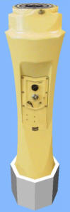

Alidada
Se trata de un Repetidor de Giróscopo de escala única con alidada incorporada, y montado sobre un pedestal, para posibilitar la medición de demoras sobre el visual.
 |
|

Este módulo dispone de un interruptor de alimentación.
Si la alidada deja de recibir datos, comenzará a girar constantemente o la luz comenzará a parpadear (según versiones), y permanecerá en este estado hasta que se restablezca el envío de datos.